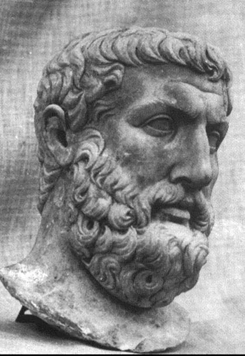

Parmenides Of Elea
~515-450 BCE · Elea
What is, is Being. What is not, cannot be thought — and so cannot be at all.
The Logos has begun its ever-constant flow through Greece, carrying philosophy away from elemental substance and toward Being itself. In their place, a new force of thought is emerging rapidly: Metaphysics. Heraclitus had already shifted philosophy toward metaphysical questions, arguing for a universe of ordered flux. However, a student of Xenophanes by the name Parmenides of Elea, develops this very framework. Through his writings, he decidedly delivers a refutation of an ever changing universe, and cements his place as the Father of Metaphysics.
Introduction
Parmenides’ teachings are delivered exclusively through verse, and thus lost to time. However, his poem, On Nature, remains the only fragment of his teachings left. It begins with an introduction, where Parmenides presents himself as receiving revelation from a goddess. It is noteworthy that this text is Parmenides writing about his own birth, where the goddess Justice speaks with him. She asserts that the way of Justice and Light is considered far from the path of mortals, unless they learn the truth in absolute conviction, “vanquishing” the test of worthiness. Perhaps this is Parmenides subtly priming his followers to heed him, for he carries the words of Justice herself.
On Truth
He begins with On Truth, where Mother Nature instructs him of two “paths of research that are open to thinking”. There is the path that “Being must be, and Non-being is not”, and the one that “Being is not, and Non-Being must be”.
The path of Being, or reality, is the only one we can conceive. The other is the path of Non-Being, which cannot be constructed by the mind. This argument stipulates that there is no such thing as “not-is”, because nothing can be thought of that has no being. This leads us to the conclusion that thinking and being are the same thing, and that the mind lies not in the devices of sensation. Thought belongs to Being rather than sensation; it exists in itself, pure and untapped. On the other hand, sensation is fleeting, and unreliable.
The argument furthers itself here. If existence leads to itself, then it doesn’t matter where one starts. There are objects of greater and less importance, and undoubtedly a hierarchy in their union. However, Parmenides argues that “Being approaches to Being”, thus it is to him indifferent whence he begins, for thither again thou shalt find him returning. All genuine thought derives from reality, and thus the exploration of thought becomes an exploration of reality itself.
What is, is Being, what is not, is Non-Being. Once again, all thought is of Being itself. It cannot come from Non-Being, because Being (thought) cannot be a product of nothing. The nature of reality is indivisible, eternal, and so reality is perfect, because it is bound by great chains of limit. For it to be truly perfect, it must have an ending. What was and what shall be cannot be what is, for Being does not change. Intellect is eternal; sensation is illusory.
Infinity cannot be comprehended; it is senseless and meaningless, for it lacks naught. The Universe, like a sphere, is all alike distant from the center. One simply cannot find something outside of being, because the very idea of thinking is Being. To think outside it is to use Being to find Non-Being, which is absurd.
Throughout this text, Parmenides also paints a dull picture of “Deaf and dumb and blind and stupid, unreasoning cattle” – those led astray by Doubt and Perplexity, ignoring Justice to believe that Being is Non-Being. Although he doesn’t explicitly clarify what he means here, the answer is made apparent in the second half of the poem.
On Opinion
Parmenides’ most controversial idea is reached here. Men set up for themselves twin shapes, and name them through opinion, despite the fact that they cannot reach one of them. Parmenides likens these twin shapes then to be the paths of existence and of Non-Being, thus humanity cannot reach the second shape.
Many examples are listed as opposites: for example, Fire/Light and Night/Darkness. Our minds account for this multiplicity, believing things can exist and change, which is proven in Alethia (On Truth) to be contradictory. Birth and Death are impossible, for to come from nothing or to become nothing is to believe that Being is of Non-Being.
Men falsely believe in the illusory idea of change, paradoxically acknowledging Being and Non-Being. Our primitive ideas of opposites hide the truth; all is only of the purity of Being, nothing ever more.
Parmenides uses Doxa (On Opinion) to contrast his path, the path claimed to be truth in conviction, with flawed empirical evidence. He challenges astronomical theory, traditional belief, and borrows from his teacher that Opinion belongs to appearances; truth belongs only to Being.
Conflict Emerges
Parmenides is considered the Father of Metaphysics. His ideas of Alethia versus Doxa are a fundamental issue metaphysics attempts to grapple. Being becomes the foundation upon which metaphysics itself is built. This sets up one of the fundamental conflicts that exists in philosophy: Heraclitus' Logos, where change is universal and ever-present, or Parmenides' Aletheia, where nothing changes at all, because the stable universe is ever-present.
Heraclitus
Panta Rhei — everything flows. Reality is defined by constant change; stasis is death.
Parmenides
Being is one, eternal, unchanging. Change is an illusion of the senses, not of reality.
Yet these seemingly irreconcilable philosophers share surprising foundations. Both believe that the way of man is not the way of justice. Both disregard sensations for their universal truth. Parmenides' belief in a non-corporeal intellect is concurred with Heraclitus' Fragment 45. Both distrust sensation. Both distinguish truth from ordinary opinion. Both believe the many mistake appearance for reality. Yet where Heraclitus discovers permanence within change, Parmenides discovers permanence by denying change altogether.
Many such similarities can be found between the two; however, though their conclusions upon man and life are similar, the origins of their thought are ultimately irreconcilable. This is the first great crossroads of philosophy. Every thinker who follows must choose, in one form or another, how Heraclitus and Parmenides are to be reconciled. These paths will cross again—and they will continue crossing long after our own journey has ended.